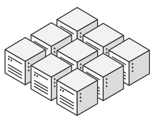
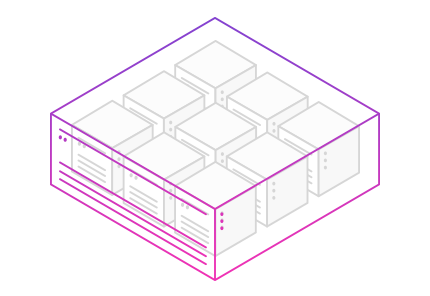
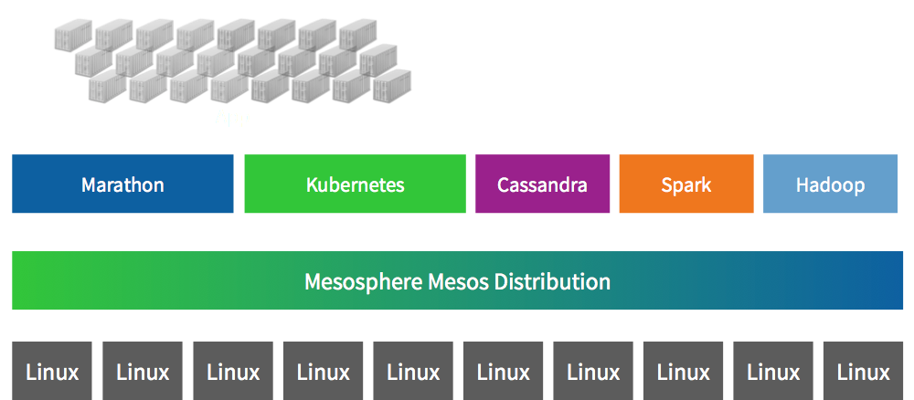

Docker containers at scale with Apache Mesos
Distributed Systems Engineer
Apache Mesos PMC
Timothy Chen
tim@mesosphere.io
@tnachen
Mesos Overview
Frameworks
Status quo is static partitioning
and use of virtual machines
Mesos let us treat a cluster of nodes...
As one big computer
|
Not as individual machines |
Not as VMs |
But as computational resources like cores, memory, disks, etc.
“Mesos is the cornerstone of our elastic compute infrastructure — it's how we build all our new services and is critical for Twitter's continued success at scale. It's one of the primary keys to our data center efficiency.” — Chris Fry, SVP of Engineering at Twitter

Containerization in Mesos, a brief history
Mesos is...
A top-level Apache project |
|
A cluster resource negotiator |
|
Scalable to 10,000s of nodes |
|
Fault-tolerant, battle-tested |
|
An SDK for distributed apps |
Mesos for all the things
Scheduler calls
| Lifecycle management | Register, Reregister, Unregister | |
| Resource allocation | Request, Decline, Revive | |
| Task management | Launch, Kill, Reconcile | |
| Communication | sendFrameworkMessage |
Scheduler events
| Lifecycle management | Registered, Reregistered | |
| Resource allocation | Offers, Rescind | |
| Task management | TaskStatus | |
| Communication | frameworkMessage |
Executor events
| Lifecycle management | Registered, Reregistered, Disconnected, Shutdown | |
| Task management | launchTask, killTask | |
| Communication | frameworkMessage |
Executor calls
| Task management | sendStatusUpdate | |
| Communication | sendFrameworkMessage |
Resource Offers
message Offer {
required OfferID id
required FrameworkID framework_id
required SlaveID slave_id
required string hostname
repeated Resource resources
repeated Attribute attributes
repeated ExecutorID executor_ids
}
message Resource {
required string name
required Value.Type type
optional Value.Scalar scalar
optional Value.Ranges ranges
optional Value.Set set
optional string role [default = "*"];
optional DiskInfo disk
}
Offers are consumed by
launching, declining, or accepting offers
class MyScheduler:
...
def resourceOffers(self, driver, offers):
...
driver.launchTasks(offers.ids, tasks, filters)
...
driver.declineOffer(offer.id, filters)
...
driver.acceptOffers(offers.ids, operations, filters)
...
def myCustomLogic():
...
driver.reviveOffers()
...
driver.killTask(taskId)
Executor/TaskInfo describes
how to run a task
|
|
CommandInfo & friends describe
what to run
|
|